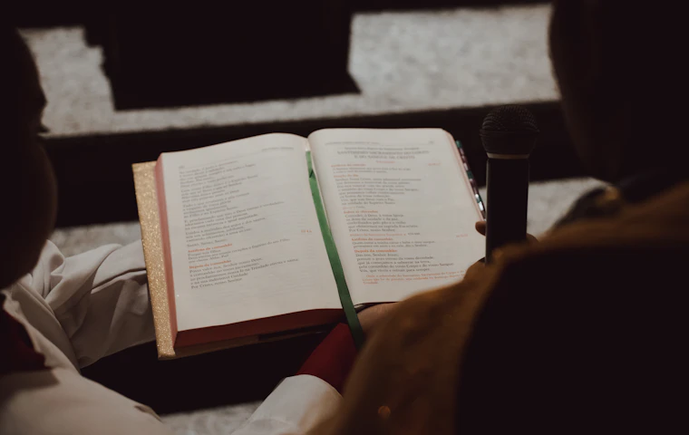

Leituras da Doce Louvor
Louvor gospel: significado, mensagens e espaço na vida cristã
Canções que expressam fé, gratidão e esperança. Conheça o significado do louvor gospel e encontre maneiras de ouvir com mais atenção.
SAIBA MAISBlog Doce Louvor
Três leituras para conhecer o repertório cristão e refletir sobre suas mensagens.
Conteúdos preparados para revisão nesta cópia de teste.
Leituras da Doce Louvor
Canções que expressam fé, gratidão e esperança. Conheça o significado do louvor gospel e encontre maneiras de ouvir com mais atenção.
SAIBA MAISLeituras da Doce Louvor
Do hino ao arranjo acústico, um repertório diverso. Entenda os estilos e o que considerar ao procurar as músicas gospel mais tocadas.
SAIBA MAIS
Leituras da Doce Louvor
A música é uma forma de expressão, mas a experiência da fé vai além da canção. Reflita sobre gratidão, atenção e vida em comunidade.
SAIBA MAIS